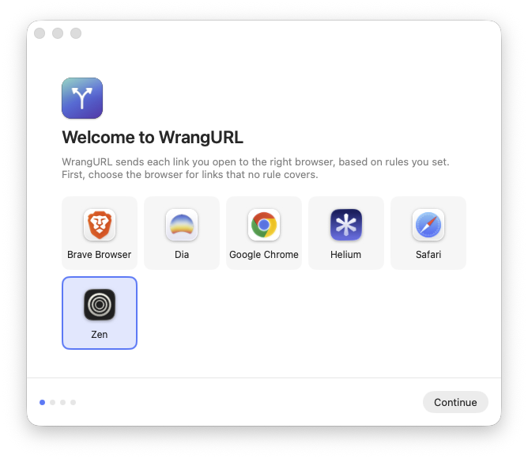
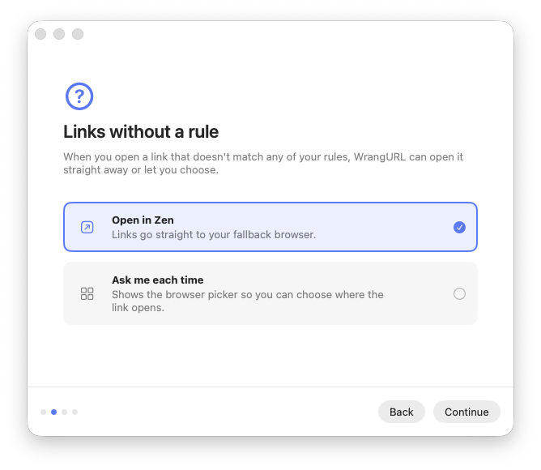
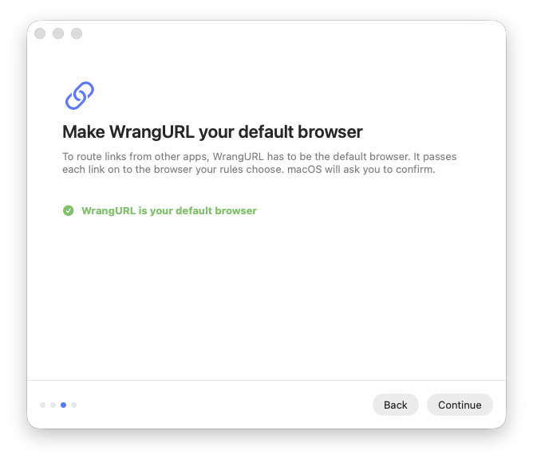
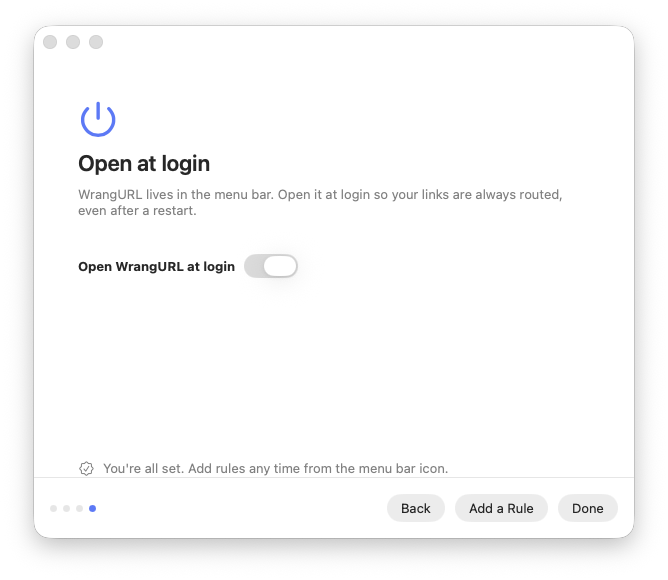
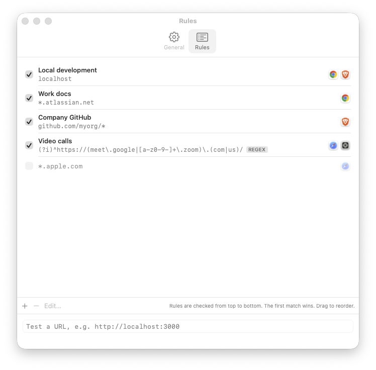
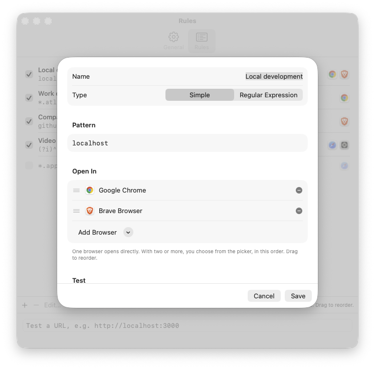
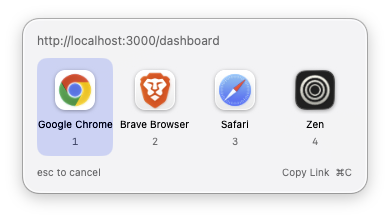
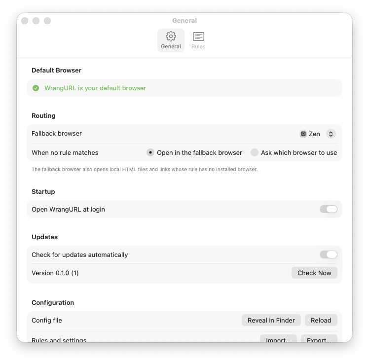

Every link, in the
right browser.
WrangURL is a small macOS menu bar app that stands in as your default browser. When you click a link in Slack, Mail or anywhere else, it checks your rules and passes the link to the browser you chose for it. When one browser isn’t enough, it asks.
Latest release on GitHub. Free and open source under the MIT License. Requires macOS 14 or later.
http://localhost:3000/dashboard
localhost):
choose Chrome or Brave in the picker.
Rules you can read
Patterns like localhost, *.example.com or github.com/myorg/*. Regular expressions when you need them.
One browser, or a choice
A rule with one browser opens it straight away. A rule with several shows a picker by the mouse pointer.
A fallback for the rest
Links that match no rule open in your fallback browser, or show the picker if you’d rather decide each time.
Stays out of the way
Lives in the menu bar, can open at login, and updates itself from GitHub releases.
Install WrangURL
-
Download the latest release
Get
WrangURL-<version>.zipfrom the latest GitHub release. Safari unzips it for you. In other browsers, double-click the zip in Downloads. -
Move it to Applications
Drag WrangURL.app into your Applications folder before you open it. macOS remembers where your default browser lives, so moving the app later means setting it as the default again.
-
Allow it past Gatekeeper
The first time you open WrangURL, macOS stops it with a message saying Apple could not verify that “WrangURL” is free of malware. Click Done, not Move to Trash, then follow the steps for your macOS version.
macOS 15 Sequoia, macOS 26 Tahoe and later
- Open System Settings and choose Privacy & Security.
- Scroll down to the Security section. You’ll see “WrangURL” was blocked to protect your Mac.
- Click Open Anyway and enter your password or use Touch ID.
- In the dialog that follows, click Open Anyway again.
If you don’t see the message, open WrangURL once more so macOS blocks it again, then come back to Privacy & Security.
macOS 14 Sonoma
- In Finder, open your Applications folder.
- Hold Control and click WrangURL, then choose Open from the menu.
- In the dialog that follows, click Open.
The Privacy & Security route described for macOS 15 works on Sonoma too.
Using Terminal, on any version
Remove the quarantine flag macOS added when you downloaded the app:
xattr -dr com.apple.quarantine /Applications/WrangURL.appThen open WrangURL as usual. This only changes this one app.
Why does macOS block WrangURL?
Apple only trusts apps without a warning when they’re signed with a paid Apple Developer ID and sent to Apple for notarization. WrangURL releases are signed with a self-signed certificate instead, so every release carries the same identity, but Apple can’t vouch for it.
You only need to allow it once. Updates from Check for Updates… are verified with a signing key before they’re installed and open without a warning. If you’d rather not trust a download, you can build WrangURL from source with Xcode.
-
Run the setup assistant
WrangURL opens a short setup assistant and adds its icon to the menu bar. The next section walks through it.
Use WrangURL
First run
The setup assistant takes four steps. You can run it again from Settings → General → Run Setup Again….
-

Choose a fallback browser. It opens links that no rule matches.
-

Decide what unmatched links do. Open them in the fallback browser, or ask each time.
-

Make WrangURL your default browser. It can only route links while it’s the default. macOS asks you to confirm.
-

Open at login, if you like, so links keep working after a restart.
Write rules
Choose Edit Rules… from the menu bar icon. Each rule has a pattern and one or more browsers. Rules are checked from top to bottom and the first match wins, so drag them into the order you want. Untick a rule to turn it off without deleting it.


Simple patterns
A simple pattern matches the host and, if you add them, the scheme, port and path. Case doesn’t matter.
| Pattern | Matches |
|---|---|
localhost | localhost over http or https, on any port |
http://localhost | localhost over http only |
localhost:3000 | localhost on port 3000 only |
*.example.com | example.com and all of its subdomains |
github.com/myorg/* | URLs on github.com whose path starts with /myorg/ |
Regular expressions
Switch a rule’s type to Regular Expression to match anywhere in the full URL.
Regular expressions are case-sensitive. Start the pattern with (?i) to ignore case, for example
(?i)^https://meet\.google\.com/.
Test before you rely on it
Paste a link into Test a URL at the bottom of the Rules tab to see which rule matches and which browser would open. The rule editor has its own test field for the rule you’re working on.
Choose in the picker

When a rule lists more than one browser, the picker appears next to the mouse pointer. The app you clicked the link in stays in front, so you can keep working after you choose.
| 1–9 | Open in that browser |
| ← → or Tab | Move the selection |
| Return | Open in the selected browser |
| ⌘C | Copy the link and close the picker |
| Esc or click elsewhere | Cancel |
Menu bar and settings
The menu bar icon gives you quick access to the things you change most:
- whether WrangURL is the default browser, with a button to set it again;
- the fallback browser, and what happens when no rule matches;
- Recent Links. Choose one to copy it;
- Edit Rules…, Settings…, Open at Login and Check for Updates….

Settings → General covers the same routing options, plus launch at login, automatic updates, whether URLs are logged, and your configuration. Use Import… and Export… to move your rules and settings between Macs as a JSON file.
Your configuration is stored in
~/Library/Containers/com.thepublicgood.wrangurl/Data/Library/Application Support/WrangURL/config.json.
If you edit it by hand, click Reload in Settings → General.
If something’s not right
- The menu bar icon shows ⚠︎
- WrangURL is no longer the default browser, often because another browser asked to be. Choose Set as Default Browser… from the menu.
- Links stopped opening after I moved the app
- macOS records where the default browser lives. Open WrangURL from its new location and set it as the default again.
- A browser is missing from the list
- WrangURL finds browsers in
/Applications,~/Applicationsand the system Applications folder. Move the browser into one of those. - Removing WrangURL
- Pick another default browser in System Settings → Desktop & Dock → Default web browser, quit WrangURL from its menu, then drag it to the Trash.
WrangURL is open source
Read the code, report a problem or suggest a feature on GitHub.
If WrangURL saves you time, you can support its development on GitHub Sponsors.